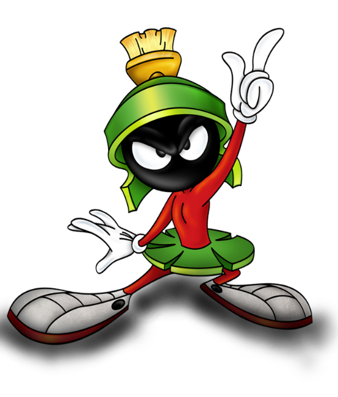

Sobre mí
Marvin el Marciano es un extraterrestre personaje de los dibujos animados de Warner Bros. Looney Tunes y Merrie Melodies. Con frecuencia aparece como un villano en dibujos animados y videojuegos, y usa casco y falda. Es muy cuestionado, por poder hablar y respirar sin boca ni nariz. El personaje fue interpretado por Mel Blanc, Joe Alaskey, Bob Bergen y Eric Bauza, entre otros. El personaje apareció por primera vez como antagonista en la caricatura de Bugs Bunny Haredevil Hare de 1948.[1] Luego apareció en cuatro caricaturas más producidas entre 1952 y 1963.[2]
Experiencia
Marvin hace su primera aparición pública el 24 de julio de 1948, con el capítulo llamado Haredevil Hare, en donde tiene la misión de destruir la Tierra con su Modulador Espacial Explosivo PU de Uranio, traducido en Latinoamérica como "Atolonium X dinamitum 3". Siempre lo vemos acompañado de su fiel perro marciano K-9. Normalmente se enfrenta a Bugs Bunny, en algunos capítulos lo secuestra, pero también trabajó en los clásicos capítulos de Duck Dodgers en el siglo 24 1/2 (Duck Dodgers in the 24th and 1/2 century) en donde se enfrentó a Duck Dodgers (el Pato Lucas) y al "joven Cadete Espacial" (Porky). Estos capítulos fueron el preludio e inspiración para una posterior serie de WB, llamada Duck Dodgers, lanzada en 2004 en Cartoon Network. En la serie de los Loonatics, Marvin tiene un diseño parecido al original, pero más radical y con su perro K-9 rediseñado como un robot. Marvin ahora es un personaje muy famoso y sus mercancías venden millones de dólares. Ha hecho varios papeles en la gran pantalla, incluida la película de 1996, Space Jam, con Michael Jordan, en donde aparece como árbitro, aunque no se quedó para arbitrar todo el juego, debido a que Bupkus lo golpeó, y en la película de 2003, Looney Tunes: Back in Action, donde fue contratado por el presidente de ACME (Steve Martin), para terminar con DJ Drake (Brendan Fraser) y la pandilla en el Área 52. En el clímax de la película, él reaparece para llevar el diamante Mono Azul al satélite ACME, pero es frustrado por Bugs (con quien se enfrenta a duelo en una parodia de Obi-Wan Kenobi y Jango Fett en Star Wars: Episodio II - El ataque de los clones) y Lucas (que llega como Duck Dodgers, para salvar a Bugs, después de que está exhausto por la batalla). También tuvo un aparición secundaria en 1988, en la película dirigida por Robert Zemeckis, ¿Quién engañó a Roger Rabbit?, donde se le veía con los Looney Tunes y caricaturas de otras compañías, al final de la película, cuando todos cantan Smile, Darn Ya, Smile!, cuando Roger Rabbit, Eddie Valiant y Jessica Rabbit entran en Toontown. Marvin es un personaje secundario en la película de 2021, Space Jam: A New Legacy, donde aparece junto con su perro K-9, después de que Bugs reclama el Mundo Tune, en nombre de la Tierra. Marvin llega para reclamar el Mundo Tune, en nombre de Marte, aunque Bugs lo engaña, haciéndole creer que el Mundo Tune está limpio. Bugs roba el barco de Marvin y se retira con LeBron James, para encontrar a los otros Tunes. Una mordaza recurrente es que Marvin queda inconsciente por la escotilla de su nave, cada vez que recupera el conocimiento.
Personalidad
En los cortometrajes de Looney Tunes, poco se dice de la personalidad del marciano, aparte claro está de su amistad con K-9 y sus deseos por conquistar planetas (incluyendo la Tierra). No fue hasta la serie Duck Dodgers, donde se empezaron a conocer ciertas características sobre el extraterrestre, por ejemplo: se descubre que tiene un miedo atroz a las alturas (porque según él mismo dice, su madre lo dejó colgando del balcón de su casa), aunque finalmente es capaz de superar este pánico gracias a la ayuda de Porky Pig; también se descubre que le encanta el golf (el golf galáctico para ser más exactos) y que no se le da nada mal; se siente atraído por su superiora, la reina de Marte (aunque ésta no le hace caso); y cambia bastante su relación con K-9: en los cortometrajes originales K-9 no era nada más que un simple esbirro suyo, sin embargo ahora se lo coloca más como su mascota que como un sirviente. No se sabe cómo habla y respira sin tener ni boca ni nariz.
Mis Hobbies
- Programar
- Jugar videojuegos
- Ver películas